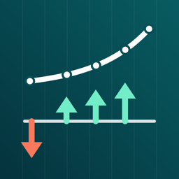

Privacy Policy
Rateline collects no data.
- On your device only: your worksheets, saved worksheets, tape and settings are stored in the app's storage on this device. They are not sent to the developer or anyone else.
- No network services: the app makes no network requests of its own. There is no account, server, advertising, analytics or tracking. The Support and Privacy links in About open this website in your browser.
- No permissions: Rateline does not use the camera, microphone, photos, location or contacts.
- Exports: CSV and PDF files are created only when you tap Export, and go only where you choose to share them.
- Purchases: the optional one-time Rateline Pro purchase is processed by Apple through the App Store. The developer does not receive your payment details.
- Deleting data: Settings › Reset clears worksheets, tape and saved worksheets; deleting the app removes all of its data. Whether app data is included in device backups such as iCloud Backup follows your iOS settings.
- Children: Rateline does not collect data from anyone, including children.
If this policy changes, the new version will be posted on this page. Contact: ppupy1200@gmail.com · Effective October 2026
개인정보 처리방침
Rateline은 어떤 데이터도 수집하지 않습니다.
- 기기에만 저장: 워크시트, 저장한 워크시트, 테이프, 설정은 이 기기의 앱 저장 공간에만 저장되며 개발자나 다른 곳으로 보내지 않습니다.
- 네트워크 서비스 없음: 앱이 직접 하는 네트워크 요청이 없습니다. 계정, 서버, 광고, 분석·추적 도구가 없습니다. 정보 화면의 지원·개인정보 링크는 브라우저에서 이 웹사이트를 엽니다.
- 권한 없음: 카메라, 마이크, 사진, 위치, 연락처를 사용하지 않습니다.
- 내보내기: CSV·PDF 파일은 내보내기를 누를 때만 만들어지고, 사용자가 공유하기로 고른 곳으로만 갑니다.
- 구입: 선택형 한 번 구입(Rateline Pro)은 Apple App Store가 처리하며 개발자는 결제 정보를 받지 않습니다.
- 데이터 삭제: 설정 › 초기화로 워크시트, 테이프, 저장한 워크시트를 지울 수 있고, 앱을 지우면 모든 데이터가 함께 지워집니다. iCloud 백업 등 기기 백업에 포함되는지는 사용자의 iOS 설정을 따릅니다.
- 어린이: 어린이를 포함해 누구의 데이터도 수집하지 않습니다.
방침이 바뀌면 이 페이지에 새 내용을 게시합니다. 문의: ppupy1200@gmail.com · 시행일 2026년 10월